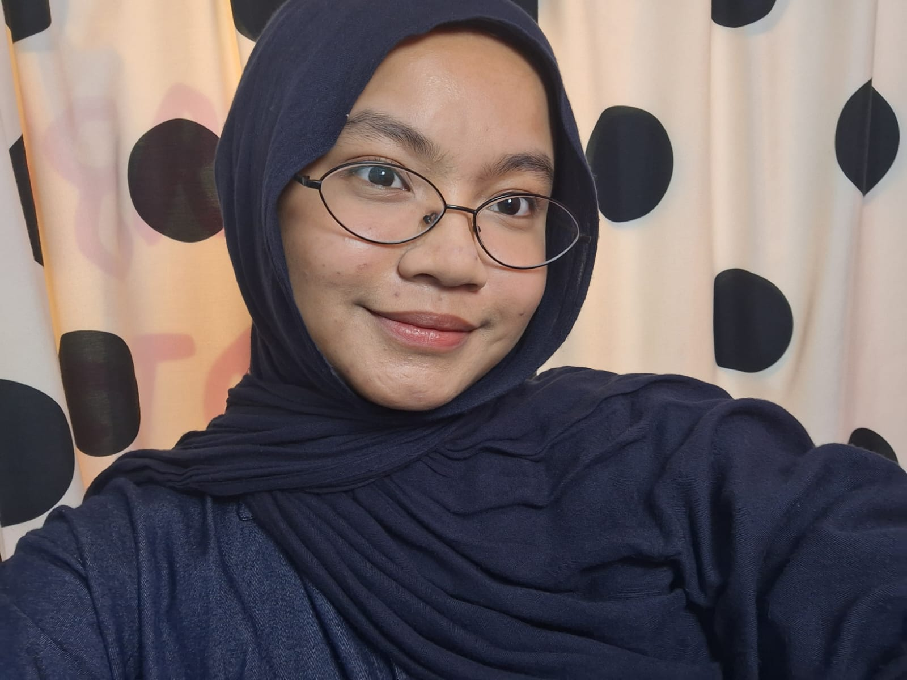

GET TO KNOW ME
ABOUT ME
A little story about myself!

Motto Hidup: Keep growing and learning!
ABOUT ME
Hi! I'm Nauralia Kalisha Diviarsa, but you can call me Naura.
I have a strong interest in technology, business, web development, and UI/UX design. I enjoy learning new things and exploring opportunities that help me improve my knowledge and abilities.
Through my organizational experiences. I have developed communication, teamwork, and event management skills. I am eager to contribute and grow as a professional Business Analyst.
MY ACADEMIC JOURNEY
EDUCATION
Universitas Brawijaya
Faculty of Computer Science - Information System
SMA PU Al Bayan Putri Sukabumi
Final Grade: 93.23 / 100
WHAT I CAN DO